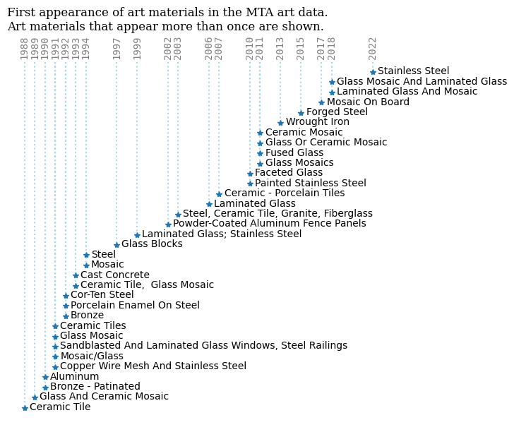

import pandas as pd
import matplotlib.pyplot as pltTidyTuesday data for 2025-07-08
mta_art = pd.read_csv('https://raw.githubusercontent.com/rfordatascience/tidytuesday/main/data/2025/2025-07-22/mta_art.csv')
station_lines = pd.read_csv('https://raw.githubusercontent.com/rfordatascience/tidytuesday/main/data/2025/2025-07-22/station_lines.csv')mta_art| agency | station_name | line | artist | art_title | art_date | art_material | art_description | art_image_link | |
|---|---|---|---|---|---|---|---|---|---|
| 0 | NYCT | Clark St | 2,3 | Ray Ring | Clark Street Passage | 1987 | Terrazzo floor tile | The first model that Brooklyn-born artist Ray ... | https://new.mta.info/agency/arts-design/collec... |
| 1 | NYCT | 125 St | 4,5,6 | Houston Conwill | The Open Secret | 1986 | Bronze - polychromed | The Open Secret, in the 125th Street and Lexin... | https://new.mta.info/agency/arts-design/collec... |
| 2 | NYCT | Astor Pl | 6 | Milton Glaser | Untitled | 1986 | Porcelain enamel murals | Milton Glaser, best known for his work in grap... | https://new.mta.info/agency/arts-design/collec... |
| 3 | NYCT | Kings Hwy | B,Q | Rhoda Andors | Kings Highway Hieroglyphs | 1987 | Porcelain Enamel Murals on Steel | The artist discusses her work: ÒIf public art... | https://new.mta.info/agency/arts-design/collec... |
| 4 | NYCT | Newkirk Av | B,Q | David Wilson | Transit Skylight | 1988 | Zinc-glazed Apolycarbonate skylight | The artist recalls, ÒAbout the same time that ... | https://new.mta.info/agency/arts-design/collec... |
| ... | ... | ... | ... | ... | ... | ... | ... | ... | ... |
| 376 | NYCT | Alabama Av | J,Z | Scott Redden | Untitled | 2007 | Faceted glass | Images of rural America evoke a nostalgia past... | https://new.mta.info/agency/arts-design/collec... |
| 377 | NYCT | Woodside-61 St | 7 | John Cavanagh | Commuting/Community | 1986 | Porcelain enamel photomontage murals on steel | Commuting/Community reflects John Cavanagh's i... | https://new.mta.info/agency/arts-design/collec... |
| 378 | NYCT | Fulton St | A, C, J, Z, 2, 3, 4, 5 | Nancy Holt | Astral Grating | 1987 | Wrought iron, light elements | Nancy Holt's steel ceiling sculpture incorpora... | https://new.mta.info/agency/arts-design/collec... |
| 379 | NYCT | 5 Av/53 St | E,M | Ralph Fasanella | Subway Riders | 1995 | Painting - Oil | All of us find ourselves from time to time mus... | https://new.mta.info/agency/arts-design/collec... |
| 380 | NYCT | Cleveland St | J | Amy Cheng | Las Flores | 2007 | Faceted glass | Located within the platform windscreens, color... | https://new.mta.info/agency/arts-design/collec... |
381 rows × 9 columns
mta_art_date = mta_art.groupby('art_date').nunique()
mta_art_date| agency | station_name | line | artist | art_title | art_material | art_description | art_image_link | |
|---|---|---|---|---|---|---|---|---|
| art_date | ||||||||
| 1980 | 1 | 1 | 1 | 1 | 1 | 1 | 1 | 1 |
| 1986 | 1 | 3 | 3 | 3 | 3 | 3 | 3 | 3 |
| 1987 | 1 | 3 | 3 | 3 | 3 | 3 | 3 | 3 |
| 1988 | 1 | 3 | 3 | 3 | 3 | 3 | 3 | 3 |
| 1989 | 1 | 2 | 2 | 2 | 2 | 2 | 2 | 2 |
| 1990 | 2 | 10 | 5 | 5 | 6 | 6 | 5 | 5 |
| 1991 | 2 | 12 | 7 | 10 | 13 | 11 | 11 | 10 |
| 1992 | 3 | 6 | 5 | 6 | 6 | 6 | 6 | 6 |
| 1993 | 2 | 3 | 2 | 2 | 3 | 2 | 2 | 2 |
| 1994 | 2 | 11 | 7 | 9 | 9 | 8 | 9 | 9 |
| 1995 | 2 | 4 | 3 | 4 | 4 | 4 | 4 | 4 |
| 1996 | 2 | 11 | 10 | 11 | 11 | 9 | 10 | 9 |
| 1997 | 2 | 6 | 6 | 6 | 6 | 6 | 6 | 6 |
| 1998 | 3 | 9 | 9 | 10 | 10 | 9 | 10 | 10 |
| 1999 | 3 | 15 | 10 | 13 | 13 | 10 | 13 | 13 |
| 2000 | 2 | 9 | 9 | 9 | 9 | 9 | 9 | 9 |
| 2001 | 2 | 9 | 9 | 10 | 10 | 8 | 10 | 10 |
| 2002 | 3 | 15 | 13 | 17 | 17 | 10 | 17 | 17 |
| 2003 | 1 | 3 | 3 | 3 | 3 | 3 | 3 | 3 |
| 2004 | 1 | 14 | 13 | 14 | 14 | 11 | 14 | 14 |
| 2005 | 3 | 12 | 11 | 12 | 12 | 10 | 12 | 11 |
| 2006 | 2 | 15 | 6 | 15 | 15 | 8 | 15 | 15 |
| 2007 | 2 | 14 | 7 | 14 | 14 | 6 | 14 | 14 |
| 2008 | 2 | 11 | 8 | 11 | 11 | 8 | 11 | 11 |
| 2009 | 3 | 8 | 7 | 8 | 8 | 7 | 8 | 8 |
| 2010 | 2 | 7 | 5 | 7 | 7 | 7 | 7 | 7 |
| 2011 | 2 | 21 | 10 | 20 | 21 | 14 | 20 | 20 |
| 2012 | 2 | 15 | 5 | 15 | 15 | 8 | 15 | 15 |
| 2013 | 3 | 8 | 3 | 6 | 6 | 8 | 6 | 6 |
| 2014 | 2 | 3 | 2 | 3 | 3 | 3 | 3 | 3 |
| 2015 | 3 | 11 | 6 | 11 | 11 | 8 | 11 | 11 |
| 2016 | 2 | 5 | 4 | 5 | 5 | 5 | 5 | 5 |
| 2017 | 3 | 16 | 5 | 13 | 14 | 11 | 14 | 13 |
| 2018 | 4 | 35 | 20 | 36 | 36 | 16 | 36 | 36 |
| 2019 | 3 | 12 | 7 | 12 | 12 | 11 | 12 | 12 |
| 2020 | 3 | 7 | 7 | 8 | 8 | 6 | 8 | 8 |
| 2021 | 3 | 8 | 4 | 8 | 8 | 7 | 8 | 8 |
| 2022 | 2 | 5 | 5 | 6 | 6 | 4 | 6 | 6 |
| 2023 | 3 | 9 | 6 | 9 | 9 | 5 | 8 | 8 |
# change art_matrial to sentence case
mta_art['art_material'] = mta_art['art_material'].str.title()
am_vc = mta_art['art_material'].value_counts()
#am_vc
# get am_vc greater than 1
am_vc[am_vc > 1]art_material
Faceted Glass 50
Glass Mosaic 49
Laminated Glass 46
Stainless Steel 15
Ceramic Mosaic 11
Bronze 6
Glass And Ceramic Mosaic 6
Copper Wire Mesh And Stainless Steel 5
Mosaic 4
Painted Stainless Steel 4
Glass Or Ceramic Mosaic 4
Aluminum 4
Fused Glass 3
Glass Mosaics 3
Powder-Coated Aluminum Fence Panels 3
Steel 3
Ceramic - Porcelain Tiles 2
Steel, Ceramic Tile, Granite, Fiberglass 2
Sandblasted And Laminated Glass Windows, Steel Railings (Stair Railing & Exterior Fence) 2
Laminated Glass And Mosaic 2
Mosaic/Glass 2
Glass Mosaic And Laminated Glass 2
Porcelain Enamel On Steel 2
Wrought Iron 2
Ceramic Tile, Glass Mosaic 2
Glass Blocks 2
Ceramic Tiles 2
Ceramic Tile 2
Mosaic On Board 2
Cast Concrete 2
Cor-Ten Steel 2
Forged Steel 2
Bronze - Patinated 2
Laminated Glass; Stainless Steel 2
Name: count, dtype: int64# Filter art_materials that appear more than once
filtered_materials = am_vc[am_vc > 1].index
# Filter the dataset for these materials
filtered_mta_art = mta_art[mta_art['art_material'].isin(filtered_materials)]
# Find the first date for each art_material
material_timeline = filtered_mta_art.groupby('art_material')['art_date'].min().reset_index()
material_timeline = material_timeline.sort_values(by='art_date')
# split art_material by "(" and keep only the first part
material_timeline['art_material'] = material_timeline['art_material'].str.split('(').str[0]
material_timeline| art_material | art_date | |
|---|---|---|
| 1 | Bronze | 1988 |
| 6 | Ceramic Tile | 1989 |
| 2 | Bronze - Patinated | 1990 |
| 9 | Copper Wire Mesh And Stainless Steel | 1990 |
| 3 | Cast Concrete | 1991 |
| 31 | Steel | 1991 |
| 14 | Glass And Ceramic Mosaic | 1991 |
| 10 | Cor-Ten Steel | 1991 |
| 8 | Ceramic Tiles | 1991 |
| 0 | Aluminum | 1992 |
| 16 | Glass Mosaic | 1992 |
| 7 | Ceramic Tile, Glass Mosaic | 1992 |
| 11 | Faceted Glass | 1993 |
| 4 | Ceramic - Porcelain Tiles | 1993 |
| 29 | Sandblasted And Laminated Glass Windows, Steel... | 1994 |
| 5 | Ceramic Mosaic | 1994 |
| 27 | Porcelain Enamel On Steel | 1997 |
| 33 | Wrought Iron | 1999 |
| 32 | Steel, Ceramic Tile, Granite, Fiberglass | 2002 |
| 18 | Glass Mosaics | 2003 |
| 20 | Laminated Glass | 2006 |
| 13 | Fused Glass | 2007 |
| 30 | Stainless Steel | 2010 |
| 12 | Forged Steel | 2010 |
| 19 | Glass Or Ceramic Mosaic | 2011 |
| 21 | Laminated Glass And Mosaic | 2011 |
| 24 | Mosaic On Board | 2011 |
| 15 | Glass Blocks | 2011 |
| 17 | Glass Mosaic And Laminated Glass | 2013 |
| 23 | Mosaic | 2015 |
| 26 | Painted Stainless Steel | 2017 |
| 25 | Mosaic/Glass | 2018 |
| 28 | Powder-Coated Aluminum Fence Panels | 2018 |
| 22 | Laminated Glass; Stainless Steel | 2022 |
Plotting
fig, ax = plt.subplots(figsize=(7,7))
ml,sl,bl = ax.stem(material_timeline['art_date'], material_timeline['art_material'],\
basefmt=' ', bottom=34)
plt.setp(sl, linestyle=':', color='lightblue')
plt.setp(ml, marker="*")
for i, txt in enumerate(material_timeline['art_material']):
ax.annotate(txt, (material_timeline['art_date'][i]+0.5, material_timeline['art_material'][i]), xytext=(0, -2), textcoords='offset points')
ax.get_yaxis().set_visible(False)
#ax.invert_yaxis()
ax.set_xticks(material_timeline['art_date'].unique())
ax.set_xticklabels(material_timeline['art_date'].unique(), rotation=90)
ax.xaxis.set_ticks_position('top')
ax.xaxis.set_label_position('top')
ax.tick_params(axis='x', which='both', length=0)
plt.xticks(fontfamily='monospace', color="gray")
plt.tick_params(axis='x', pad=-15)
ax.spines[['top', 'right', 'bottom', 'left']].set_visible(False)
plt.title("First appearance of art materials in the MTA art data.\nArt materials that appear more than once are shown.", fontfamily='serif', fontsize=12, loc='left')
#plt.savefig("MTA_art.png", dpi=300)
plt.show()